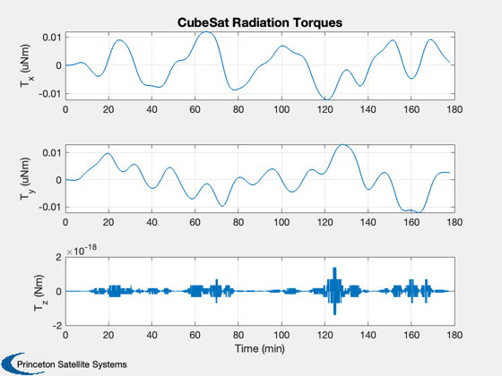
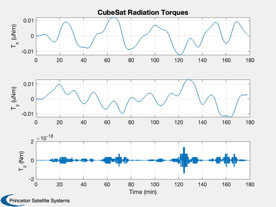

Demonstrate a CubeSat attitude and power system dynamics.
This simulation includes drag and radiation pressure. The only actuator available for attitude is magnetic torquers, which is modeled as a dipole. Performs an animation at the end which may take a few minutes. The satellite is initialized pointing to the Earth with a rotation equal to orbit rate, to nominally maintain that pointing. The z body axis is pointed towards the Earth (nadir).
Things to try: 1. Turn surface disturbances off by uncommenting the line setting d.surfData to empty; notice that the altitude no longer drops. 2. Initialize the battery charge b0 to zero 3. Comment out or change the fixed dipole in the for loop 4. Try a 1U instead of a 3U
---------------------------------------------------------------------- See also AnimQ, QForm, Plot2D, TimeLabl, RK4, Skew, Date2JD, InertiaCubeSat, CubeSatAero, CubeSatRadiationPressure, RHSCubeSat, CubeSatFaces, BDipole, SolarFluxPrediction, GroundTrack ----------------------------------------------------------------------
Contents
%------------------------------------------------------------------------ % Copyright (c) 2009 Princeton Satellite Systems, Inc. % All rights reserved. %------------------------------------------------------------------------ % Since version 8. %------------------------------------------------------------------------
Select the CubeSat type
The face areas and normals are needed by the aero model. They are given by the CubeSatFaces function. -------------------------------------------------------------------------
cube = '3U';
[a,n,r] = CubeSatFaces( cube, 1 );
Start with defaults for the RHS
RHSCubeSat will return a default data structure. The defaults are for a 1U CubeSat in orbit around the Earth. These will need to be modified for each simulation. CubeSats are 1 kg per unit (U). The InertiaCubeSat function computes the inertia of a CubeSat assuming the mass is uniformly distributed throughout the volume. This is usually a good first approximation.
%-------------------------------------------------------------------------- d = RHSCubeSat; d.jD0 = Date2JD([2012 4 5 0 0 0]); % Julian date d.mass = 1; % kg d.inertia = InertiaCubeSat( cube, d.mass );
Initial State
The state vector is [position;velocity;quaternion;angular velocity; battery state of charge]. We initialize in a circular orbit with the satellite aligned with LVLH: z towards nadir and x along velocity.
%-------------------------------------------------------------------------- a0 = 6600; % km i0 = 0.2; % rad el = [a0 i0 0 0 0 0]; [r0,v0] = El2RV( el ); q0 = QLVLH(r0,v0); w0 = [0;-OrbRate(a0);0]; % .001 b0 = 20000; x = [r0;v0;q0;w0;b0]; PltOrbit( el, d.jD0 );

Surface model
Specify the surface model properties. Used to calculate the forces on the CubeSat from drag and radiation pressure.
%-------------------------------------------------------------------------- d.surfData.cD = 2.7; % coefficient of drag d.surfData.nFace = n; d.surfData.rFace = r; d.surfData.cM = [0;0;0]; d.surfData.area = a; d.surfData.sigma = [1 1 1 1 1 1;zeros(2,6)]; d.surfData.att.type = 'eci'; %d.surfData = []; % turns off surface disturbances d.aeroModel = @CubeSatAero; d.opticalModel = @CubeSatRadiationPressure; d.skewOmegaEarth = Skew([0;0;7.291e-5]);
Power system model
Specify solar cells on each face and the battery capacity. The six one's in solarCellArea indicate that this model has a solar cell covering 80% of all six faces of the CubeSat. If you changed one of the one's to a zero, then the model would have one face with no solar cell.
%-------------------------------------------------------------------------- d.power.solarCellNormal = n; d.power.solarCellEff = 0.15; d.power.effPowerConversion = 0.8; d.power.solarCellArea = 0.8*a.*[1 1 1 1 1 1]; d.power.consumption = 0.5; d.power.batteryCapacity = 40000; % J
Solar flux
Get the solar flux predictions for the atmospheric density model. The atmospheric density model used is Jacchia's 1970 model. See the function AtmJ70 for more information. To use AtmDens2 instead of AtmJ70, set d.atm to empty (d.atm = []).
%-------------------------------------------------------------------------- [aP, f, fHat, fHat400] = SolarFluxPrediction( d.jD0, 'nominal' ); d.atm.aP = aP(1); d.atm.f = f(1); d.atm.fHat = fHat(1); d.atm.fHat400 = fHat400(1);
Planet
Specify the planet we are orbiting and its radius.
%--------------------------------------------------- d.planet = 'earth'; d.rP = 6378.165;
Initialize control
This variable will be used in the control loop to specify the control for each timestep. For now, start with zero.
%------------------------------------------
d.dipole = [0;0;0];
Time parameters
Specify the simulation duration and timestep.
%---------------------------------------------- tic orbits = 2; tEnd = orbits*Period(a0); dT = 2; % sec nSim = floor(tEnd/dT);
Initialize the plotting array to save time
Preallocates memory for the plotting variables. -----------------------------------------------
xPlot = [x zeros(14,nSim)]; [xT, dist,power] = RHSCubeSat( x, 0, d ); dragPlot = [dist.fAerodyn zeros(3,nSim)]; radPlot = [dist.fOptical zeros(3,nSim)]; tRadPlot = [dist.tOptical zeros(3,nSim)]; tAeroPlot = [dist.tAerodyn zeros(3,nSim)]; tMagPlot = [dist.tMag zeros(3,nSim)]; tGGPlot = [dist.tGG zeros(3,nSim)]; powerPlot = [power zeros(1,nSim)]; bPlot = zeros(3,nSim+1); qPlot = zeros(4,nSim+1);
Run the simulation
%-------------------- t = 0; h = waitbar(0,'CubeSat Simulation'); upF = ceil(nSim/20); kW = 1; for k = 1:nSim % Magnetic field - the magnetometer output is proportional to this %----------------------------------------------------------------- bField = BDipole( x(1:3), d.jD0+t/86400 ); bBody = QForm( x(7:10), bField ); % Control system placeholder - apply constant dipole %--------------------------------------------------- d.dipole = [0.001;0;0]; % Amp-turns m^2 % A time step with 4th order Runge-Kutta %--------------------------------------- x = RK4( @RHSCubeSat, x, dT, t, d ); % Obtain effect of disturbances and control %------------------------------------------ [xT, dist,power] = RHSCubeSat( x, t, d ); dragPlot(:,k+1) = dist.fAerodyn; tAeroPlot(:,k+1) = dist.tAerodyn; radPlot(:,k+1) = dist.fOptical; tRadPlot(:,k+1) = dist.tOptical; tMagPlot(:,k+1) = dist.tMag; tGGPlot(:,k+1) = dist.tGG; powerPlot(:,k+1) = power; bPlot(:,k+1) = bField; qLVLH = QLVLH(x(1:3),x(4:6)); qPlot(:,k+1) = QMult(QPose(qLVLH),x(7:10)); % Update plotting and time %------------------------- xPlot(:,k+1) = x; t = t + dT; if k/upF >= kW waitbar(k/nSim,h); kW = kW + 1; end end close(h);
Plotting
%---------- time = (0:nSim)*dT; [tP, tL] = TimeLabl( time ); % Y-axis labels %-------------- yL = {'r_x (km)' 'r_y (km)' 'r_z (km)' 'v_x (km/s)' 'v_y (km/s)' 'v_z (km/s)'... 'q_s' 'q_x' 'q_y' 'q_z' '\omega_x (rad/s)' '\omega_y (rad/s)' '\omega_z (rad/s)' 'b (Wh)'}; GroundTrack( xPlot( 1: 3,:), time, d.jD0 ); rMag = Mag(xPlot( 1: 3,:)); Plot2D( tP, rMag-rMag(1), tL, '\Delta h km', 'Change in Altitude' ); Plot2D( tP, xPlot(7:10,:), tL, {yL{ 7:10}}, 'CubeSat ECI To Body Quaternion' ); Plot2D( tP, qPlot, tL, {yL{ 7:10}}, 'CubeSat LVLH To Body Quaternion' ); Plot2D( tP, xPlot(11:13,:), tL, {yL{11:13}}, 'CubeSat Attitude Rate (rad/s)' ); Plot2D( tP, [xPlot(14,:)/3600;powerPlot], tL, {yL{14},'Power (W)'}, 'CubeSat Power System' ); Plot2D( tP, dragPlot*1e3, tL, {'F_x (mN)', 'F_y (mN)', 'F_z (mN)'}, 'CubeSat Drag Force (mN)' ); Plot2D( tP, tAeroPlot*1e6, tL, {'T_x (uNm)','T_y (uNm)','T_z (uNm)'},'CubeSat Aerodynamic Torques') Plot2D( tP, tMagPlot*1e6, tL, {'T_x (uNm)','T_y (uNm)','T_z (uNm)'},'CubeSat Magnetic Torques') Plot2D( tP, tGGPlot*1e6, tL, {'T_x (uNm)','T_y (uNm)','T_z (uNm)'},'CubeSat Gravity Gradient Torques') Plot2D( tP, radPlot*1e3, tL, {'F_x (mN)','F_y (mN)','F_z (mN)'},'CubeSat Radiation Force (mN)') Plot2D( tP, tGGPlot*1e6, tL, {'T_x (uNm)','T_y (uNm)','T_z (Nm)'},'CubeSat Radiation Torques') Plot2D( tP, bPlot, tL, {'B_x (T)','B_y (T)','B_z (T)'},'Magnetic Field (ECI Frame)') Figui;
 
 Animate the first 800 points
%------------------------------- AnimQ( qPlot(:,1:800) ); toc %-------------------------------------- % $Date$ % $Id: c117e59562d7f52159e41bafedab039a26c785b3 $
Elapsed time is 22.418832 seconds.